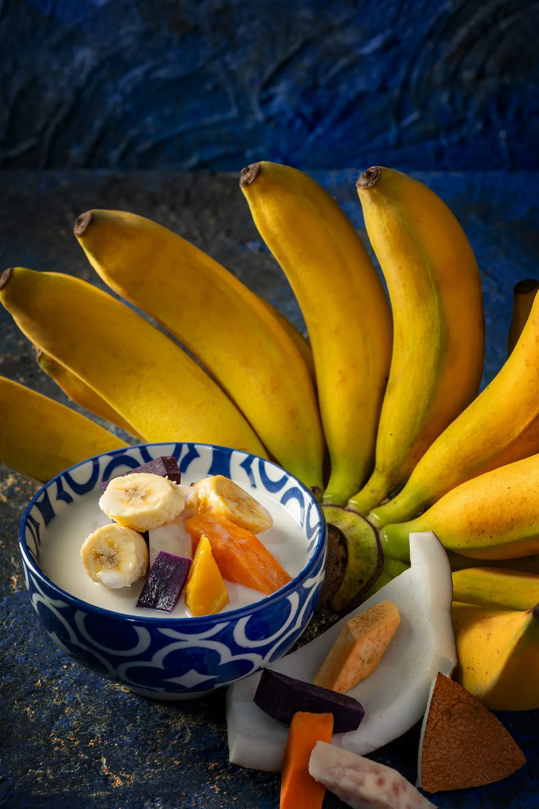

On Auntie's table · No. 04
Pengat,
to finish.
Pisang Raja bananas, sweet potato and yam in coconut milk. A Nyonya dessert, made by hand from scratch.

Pisang Raja bananas, sweet potato and yam in coconut milk. A Nyonya dessert, made by hand from scratch.